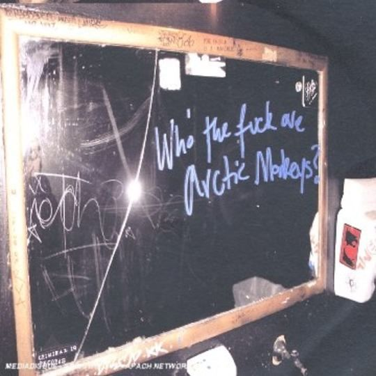
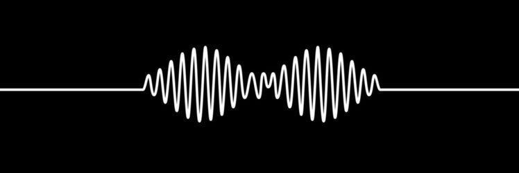
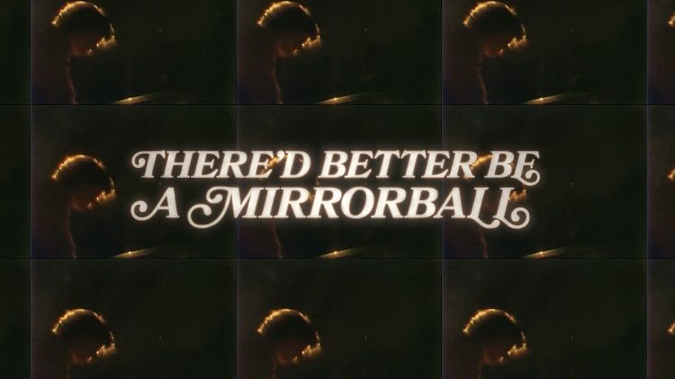

About The Band
2002-2005: early years and record deal
Arctic Monkeys was formed in mid-2002 by friends Alex Turner, Matt Helders and Andy Nicholson. Turner and Helders were neighbours and close friends, and they met Nicholson in secondary school. Turner, who had grown up in a musical household as his father was a music teacher, played guitar in the then-instrumental-only band, with Helders on drums, Nicholson on bass and a new band member, Jamie Cook, as a second guitarist. The name "Arctic Monkeys" was Cook's idea and is perhaps a play on "northern monkey", a derogatory term for someone from northern England. Initially, Turner was reluctant when it came to being the lead singer. As time passed, Turner became the lead singer and frontman of the band as he had "a thing for words", according to Helders.
The band began rehearsing at Yellow Arch Studios in Neepsend, and played its first gig on 13 June 2003 at The Grapes in Sheffield city centre. After a few performances in 2003, the band began to record demos at 2fly studios in Sheffield. 18 songs were demoed in all and the collection, now known as Beneath the Boardwalk, was burned onto CDs to give away at gigs, which were promptly file-shared amongst fans.
The band began to grow in popularity across the north of England, receiving attention from BBC Radio and the British tabloid press. A local amateur photographer, Mark Bull, filmed the band's performances and made the music video "Fake Tales of San Francisco", releasing it on his website, alongside the contents of Beneath the Boardwalk – a collection of the band's songs which he named after a local music venue. When asked about the popularity of the band's MySpace site, the band said that they were unaware of what it was and that the site had originally been created by their fans. In May 2005, Arctic Monkeys released the EP Five Minutes with Arctic Monkeys on their own 'Bang Bang' label, featuring the songs "Fake Tales of San Francisco" and "From the Ritz to the Rubble". This release was limited to 500 CDs and 1,000 7" records, but was also available to download from the iTunes Music Store. Soon after, the band played at the Carling Stage of the Reading and Leeds Festivals, reserved for less known or unsigned bands.
Eventually, they were signed to Domino in June 2005. The band said they were attracted to the DIY ethic of Domino owner Laurence Bell, who ran the label from his flat and only signed bands that he liked personally. Their debut single "I Bet You Look Good on the Dancefloor", which was recorded at Chapel Studios in Lincolnshire, was released on 17 October 2005 and went straight to No. 1 on the UK Singles Chart. Their second single, "When the Sun Goes Down" (previously titled "Scummy"), released on 16 January 2006, also went straight to No. 1 on the UK Singles Chart. The band's success with little marketing or advertising led some to suggest that it could signal a change in how new bands achieve recognition.
2006: Whatever People Say I Am, That's What I'm Not
The band finished recording their debut album, Whatever People Say I Am, That's What I'm Not, at Chapel Studios in Lincolnshire in january 2006 with British record producer Jim Abbiss. Whatever People Say I Am, That's What I'm Not became the fastest-selling debut album in UK chart history, selling 363,735 copies in the first week. This surpassed the previous record of 306,631 copies held by Popstars by Hear'Say and sold more copies on its first day alone – 118,501 – than the rest of the Top 20 albums combined.
The record was released a month later in the US on 21 February 2006 and entered at No. 24 on the Billboard album chart after it sold 34,000 units in its first week, making it the second fastest selling for a debut indie rock album in America. However, US sales for the first year did not match those of the first week in the UK for the album. US critics were more reserved about the band than their UK counterparts and appeared unwilling to be drawn into the possibility of "yet another example of the UK's press over-hyping new bands". However, the band's June 2006 tour of North America received critical acclaim at each stop– the hype surrounding them "proven to exist for good reason". Meanwhile, the UK's NME magazine declared the band's debut album the "5th greatest British album of all time". It also equalled the record of the Strokes and Oasis at the 2006 NME Awards, winning three fan-voted awards for Best British Band, Best New Band and Best Track for "I Bet You Look Good on the Dancefloor".
Arctic Monkeys wasted no time in recording new material and released Who the Fuck Are Arctic Monkeys?, a five-track EP on 24 April 2006. Due to its length, the EP was ineligible to chart as a UK single or album. Furthermore, the record's graphic language has resulted in significantly less radio airplay than previous records, although this was not a reported concern according to an insider – "since they made their name on the Internet... they don't care if they don't get radio play".

Soon after the release of the EP in the UK, the band announced that Andy Nicholson would not take part in the band's forthcoming North America tour due to fatigue from "an intensive period of touring". On returning to the UK, Nicholson confirmed that he would leave Arctic Monkeys and start his own project. He also said that he couldn't deal with the band's fame and success over the previous six months. In a statement on their official website, the band said: "We are sad to tell everyone that Andy is no longer with the band", also confirmed that Nick O'Malley – former bassist with the Dodgems, who had drafted in as temporary bassist for the tour – would continue as bassist for the rest of their summer tour schedule. Shortly after, Nick O'Malley was confirmed as the formal replacement for Nicholson.
Arctic Monkeys' first release without Nicholson, the single "Leave Before the Lights Come On", came on 14 August 2006. Turner said that the song was one of the last songs he wrote before their rise to fame and suggested that "it feels very much like it could be on the album". Peaking at No. 4 in the UK, the single became the band's first single not to reach No. 1. The band was re-united at the Leeds Festival when Nicholson met up with his former bandmates and his replacement bassist, O'Malley. Only the original band members, minus Nicholson, were present at the award ceremony when Whatever People Say I Am, That's What I'm Not won the 2006 Mercury Prize two weeks later.
2007: Favourite Worst Nightmare
The band's second album, Favourite Worst Nightmare, was released on 23 April 2007, a week after the release of accompanying single "Brianstorm". Like its predecessor, Favourite Worst Nightmare also quickly reached No. 1 in the album charts. Turner described the songs as "very different from last time", adding that the sound of some tracks are "a bit full-on – a bit like "From the Ritz to the Rubble", "The View from the Afternoon", that sort of thing". A secret gig played at Sheffield's Leadmill on 10 February 2007, debuted seven new songs (six from Favourite Worst Nightmare and one other). Early reviews of the release were positive and described it as "very, very fast and very, very loud".
On 29 April 2007, the day Favourite Worst Nightmare charted at No. 1 in the UK Albums Chart, all 12 tracks from the album charted in the Top 200 of the UK Singles Chart. The band later released "Fluorescent Adolescent" as a single, and it charted at No. 5, after debuting the song live on The Jonathan Ross Show dressed as clowns. The third single from Favourite Worst Nightmare, "Teddy Picker", was released on 3 December 2007. It charted at No. 20 and remained only one week in the top 40 staying in this position, making it the lowest charting single for the band so far.
2008-2010: Humbug
After a brief hiatus during which Turner toured and recorded with his side project the Last Shadow Puppets, the band recorded half the album at Rancho De La Luna recording sessions with Josh Homme of Queens of the Stone Age in early autumn, 2008, and half in the New York sessions with James Ford in spring, 2009, following their January tour of New Zealand and Australia. During this tour, lead single "Crying Lightning", along with Humbug songs "Pretty Visitors", "Dangerous Animals" and "Potion Approaching" (then known as "Go-Kart"), was debuted live. Humbug was released on 19 August 2009, and, like both of its predecessors, the album went straight to No. 1.
As announced on Arctic Monkeys' website, the first single from Humbug was "Crying Lightning", released on 6 July. It also received its first radio premiere on the same day. On 12 July 2009, the single "Crying Lightning" debuted at number 12 in the UK Singles Chart. The second single, "Cornerstone", was released on 16 November 2009. It was announced in February 2010 that the third and final single to be taken from Humbug would be "My Propeller", released on 22 March.

2011-2012: Suck It and See
NME reported in May 2011 that the band was teaming up with producer James Ford once again and would be releasing their fourth studio album in late spring at the earliest. The album was recorded in Sound City Studios in Los Angeles in 2010 and 2011. On 4 March 2011, the band premiered on its website a new track called "Brick by Brick" with lead vocals by Matt Helders. Helders explained that this is not a single, just a tease of what is coming and that is it is going to be on the fourth album. On 10 March 2011 the band revealed the album is to be called Suck It and See and was released on 6 June 2011. The album went straight to No. 1 in the album charts. In doing so, Arctic Monkeys became only the second band in history to debut four albums in a row at the top of the charts.
The album has also been successful commercially. In its first week of release, the album debuted at number one in the United Kingdom, selling over 82,000 units. Overall, the album sold 333,000 units. In July, the album won Mojo award for the Best Album of 2011. Mojo placed the album at number 39 on its list of "Top 50 albums of 2011". On 30 May, a week before official release, Domino Records streamed the entire album on SoundCloud. Within a few hours of being made public, the first two tracks had reached over 10,000 listens each, and by the end of the week, each had accrued over 100,000 plays.

2013-2016: AM
On 26 February 2012, the band released a new song titled "R U Mine?" on their YouTube channel. On 4 March, it went to No. 23 on the UK Singles Chart on downloads alone. On 21 April, the song was released as a single, with the track "Electricity" as a B-side, released additionally for Record Store Day. On 22 May 2013 the band started the AM Tour at the Ventura Theatre in Ventura, California, where they debuted a new song titled "Do I Wanna Know?". On 14 June, the band debuted another song titled "Mad Sounds" at Hultsfred Festival in Sweden. Four days later, on 18 June 2013, the band released the official video to "Do I Wanna Know?". The studio version of the song, along with accompanying visuals, was also made available to purchase via iTunes and entered the UK Singles Chart at number 11.
The band's fifth studio album, AM, was released on 9 September 2013. The album was recorded in Rancho de la Luna in Joshua Tree, California and features guest appearances from Josh Homme of Queens of the Stone Age, Elvis Costello's drummer Pete Thomas and Bill Ryder-Jones of the Coral. On 11 August 2013, the third single from the album, "Why'd You Only Call Me When You're High?", was released, with the B-side "Stop The World I Wanna Get Off With You". It debuted at no. 8 on the UK Singles Chart on 18 August 2013, making it the band's first UK Top 10 single since 2007's "Fluorescent Adolescent".
Upon the release of AM on 9 September 2013, the album debuted at number 1 in the UK album charts, selling over 157,000 copies in its first week. As a result, Arctic Monkeys made history as the first independent label band with five consecutive number 1 albums in the UK. The album received widespread critical acclaim and brought Arctic Monkeys their third nomination for the Mercury Prize. The album also won the Brit award for Best British Album. In the United States, the album sold 42,000 copies in its first week and debuted at number six on the Billboard 200 chart, becoming the band's highest-charting album in the United States. In August 2017, AM was certified platinum by the RIAA for combined sales and album-equivalent units over of a million units in the United States. Turner described AM as the band's "most original album yet," merging hip-hop drum beats with 1970s heavy rock. The frontman has said that the song "Arabella" expresses the two styles of the album most effectively in one track. On AM, Turner continued to experiment with unusual lyrics, and the album includes the words from poem "I Wanna Be Yours" by John Cooper Clarke. Turner has stated that Homme's appearance on the song "Knee Socks" marks his favourite moment of the whole album.
2017-2021: Tranquility Base Hotel & Casino
In December 2016, Turner confirmed to BBC Radio Sheffield that the band's hiatus had ended and work had begun on their sixth studio album. The album had begun recording in September 2017. The album, Tranquility Base Hotel & Casino was released on 11 May 2018. Despite its stylistic deviation polarising listeners, Tranquility Base Hotel & Casino was released to generally positive reviews. It became the band's sixth consecutive number-one debut in the UK and the country's fastest-selling vinyl record in 25 years. Following its release, the album was promoted by the singles "Four Out of Five" and "Tranquility Base Hotel & Casino", multiple television appearances.
Tranquility Base Hotel & Casino was nominated for the 2018 Mercury Prize, an annual prize awarded to the year's best British or Irish album. This became the band's fourth nomination for the award: the second most nominations received by any act. The album was nominated for Best Alternative Music Album at the 61st Annual Grammy Awards, with single "Four Out of Five" nominated for Best Rock Performance. The album also appeared on numerous year-end lists. Publications including NME, The Independent and Mojo also listed Tranquility Base Hotel & Casino as the year's second best album.
A live album from their 2018 Tranquility Base Hotel & Casino Tour concert at the Royal Albert Hall entitled Live at the Royal Albert Hall was released on 4 December 2020. All proceeds from the album, as with the concert, went to the charity War Child.
2022-present: The Car
On 8 December 2021, the band was announced as the Saturday co-headliner of the 2022 Reading and Leeds Festival, alongside Bring Me the Horizon, Megan Thee Stallion, Rage Against the Machine and Halsey. On 23 August 2022 at the Zurich Openair festival, they debuted new song "I Ain't Quite Where I Think I Am". The following day they announced their seventh studio album, The Car, which was released on 21 October 2022. On 30 August 2022, they released the first single from the album, "There'd Better Be a Mirrorball", accompanied by a video directed by Turner. "I Ain't Quite Where I Think I Am" was released as the third single on 18 October 2022. The Car peaked at No. 2 on the UK Albums Chart, behind Taylor Swift's Midnights. In the US, the album landed at No. 6 on the Billboard 200.
Musical style and influences
Arctic Monkeys' musical style has been mainly described as indie rock, garage rock, post-punk revival, psychedelic rock, alternative rock, lounge pop, post-Britpop, stoner rock, guitar pop, post-punk, punk rock, and hard rock. A key part of their sound, and one that translates across their whole discography, is Turner's intricate and often rapidly delivered lyrics, sung in a distinctive strong Sheffield accent that their music became famed for in their early years. The punk poet John Cooper Clarke was a formative influence on Turner; his poem "I Wanna Be Yours" was adapted into a track on the band's fifth album AM.